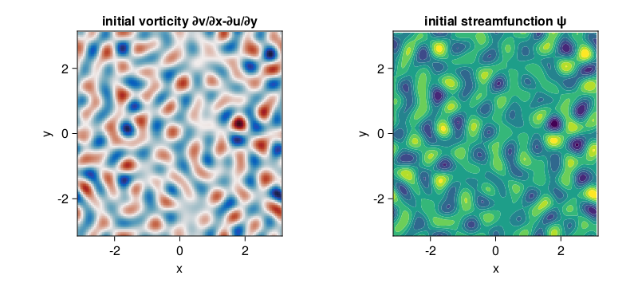

Decaying barotropic QG beta-plane turbulence
An example of decaying barotropic quasi-geostrophic turbulence on a beta plane.
Install dependencies
First let's make sure we have all required packages installed.
using Pkg
pkg"add GeophysicalFlows, CairoMakie, Printf, Statistics, Random"Let's begin
Let's load GeophysicalFlows.jl and some other packages we need.
using GeophysicalFlows, CairoMakie, Printf, Random
using Statistics: meanChoosing a device: CPU or GPU
dev = CPU() # Device (CPU/GPU)Numerical parameters and time-stepping parameters
n = 128 # 2D resolution: n² grid points
stepper = "FilteredRK4" # timestepper
dt = 0.04 # timestep
nsteps = 2000 # total number of time-steps
nsubs = 10 # number of time-steps for intermediate logging/plotting (nsteps must be multiple of nsubs)Physical parameters
L = 2π # domain size
β = 10.0 # planetary PV gradient
μ = 0.0 # bottom dragProblem setup
We initialize a Problem by providing a set of keyword arguments. We use stepper = "FilteredRK4". Filtered timesteppers apply a wavenumber-filter at every time-step that removes enstrophy at high wavenumbers and, thereby, stabilize the problem, despite that we use the default viscosity coefficient ν=0. Thus, we choose not to do any dealiasing by providing aliased_fraction=0.
prob = SingleLayerQG.Problem(dev; nx=n, Lx=L, β, μ, dt, stepper, aliased_fraction=0)and define some shortcuts
sol, clock, vars, params, grid = prob.sol, prob.clock, prob.vars, prob.params, prob.grid
x, y = grid.x, grid.ySetting initial conditions
Our initial condition consist of a flow that has power only at wavenumbers with $6 < \frac{L}{2\pi} \sqrt{k_x^2 + k_y^2} < 10$ and initial energy $E_0$. device_array() function returns the array type appropriate for the device, i.e., Array for dev = CPU() and CuArray for dev = GPU().
E₀ = 0.08 # energy of initial condition
K = @. sqrt(grid.Krsq) # a 2D array with the total wavenumber
Random.seed!(1234)
q₀h = device_array(dev)(randn(Complex{eltype(grid)}, size(sol)))
@. q₀h = ifelse(K < 6 * 2π/L, 0, q₀h)
@. q₀h = ifelse(K > 10 * 2π/L, 0, q₀h)
@. q₀h[1, :] = 0 # remove any power from zonal wavenumber k=0
q₀h *= sqrt(E₀ / SingleLayerQG.energy(q₀h, vars, params, grid)) # normalize q₀ to have energy E₀
q₀ = irfft(q₀h, grid.nx)
SingleLayerQG.set_q!(prob, q₀)Let's plot the initial vorticity and streamfunction. Note that when plotting, we decorate the variable to be plotted with Array() to make sure it is brought back on the CPU when vars live on the GPU.
fig = Figure(resolution = (800, 360))
axq = Axis(fig[1, 1];
xlabel = "x",
ylabel = "y",
title = "initial vorticity ∂v/∂x-∂u/∂y",
aspect = 1,
limits = ((-grid.Lx/2, grid.Lx/2), (-grid.Ly/2, grid.Ly/2))
)
axψ = Axis(fig[1, 2];
xlabel = "x",
ylabel = "y",
title = "initial streamfunction ψ",
aspect = 1,
limits = ((-grid.Lx/2, grid.Lx/2), (-grid.Ly/2, grid.Ly/2))
)
heatmap!(axq, x, y, Array(vars.q); colormap = :balance)
contourf!(axψ, x, y, Array(vars.ψ); colormap = :viridis)
fig
Diagnostics
Create Diagnostics – energy and enstrophy functions are imported at the top.
E = Diagnostic(SingleLayerQG.energy, prob; nsteps)
Z = Diagnostic(SingleLayerQG.enstrophy, prob; nsteps)
diags = [E, Z] # A list of Diagnostics types passed to "stepforward!" will be updated every timestep.Output
We choose folder for outputing .jld2 files and snapshots (.png files).
filepath = "."
plotpath = "./plots_decayingbetaturb"
plotname = "snapshots"
filename = joinpath(filepath, "decayingbetaturb.jld2")Do some basic file management,
if isfile(filename); rm(filename); end
if !isdir(plotpath); mkdir(plotpath); endand then create Output.
get_sol(prob) = prob.sol # extracts the Fourier-transformed solution
out = Output(prob, filename, (:sol, get_sol))Visualizing the simulation
We plot the vorticity and streamfunction and their corresponding zonal mean structure.
Lx, Ly = grid.Lx, grid.Ly
title_q = Observable(@sprintf("vorticity, t = %.2f", clock.t))
title_ψ = "streamfunction ψ"
fig = Figure(resolution=(800, 720))
axis_kwargs = (xlabel = "x",
ylabel = "y",
aspect = 1,
limits = ((-Lx/2, Lx/2), (-Ly/2, Ly/2)))
axq = Axis(fig[1, 1]; title = title_q, axis_kwargs...)
axψ = Axis(fig[2, 1]; title = title_ψ, axis_kwargs...)
axq̄ = Axis(fig[1, 2],
xlabel = "zonal mean vorticity",
ylabel = "y",
aspect = 1,
limits = ((-2.1, 2.1), (-Ly/2, Ly/2)))
axū = Axis(fig[2, 2],
xlabel = "zonal mean u",
ylabel = "y",
aspect = 1,
limits = ((-0.5, 0.5), (-Ly/2, Ly/2)))
q = Observable(Array(vars.q))
ψ = Observable(Array(vars.ψ))
q̄ₘ = Observable(Array(vec(mean(vars.q, dims=1))))
ūₘ = Observable(Array(vec(mean(vars.u, dims=1))))
heatmap!(axq, x, y, q;
colormap = :balance, colorrange = (-12, 12))
levels = collect(range(-0.7, stop=0.7, length=20))
contourf!(axψ, x, y, ψ;
levels, colormap = :viridis, colorrange = (-0.35, 0.35))
contour!(axψ, x, y, ψ;
levels, color = :black)
lines!(axq̄, q̄ₘ, y; linewidth = 3)
lines!(axq̄, 0y, y; linewidth = 1, linestyle = :dash)
lines!(axū, ūₘ, y; linewidth = 3)
lines!(axū, 0y, y; lindewidth = 1, linestyle = :dash)
fig
Time-stepping the Problem forward
We step the Problem forward in time.
startwalltime = time()
frames = 0:round(Int, nsteps / nsubs)
record(fig, "singlelayerqg_betadecay.mp4", frames, framerate = 12) do j
if j % round(Int, nsteps/nsubs / 4) == 0
cfl = clock.dt * maximum([maximum(vars.u) / grid.dx, maximum(vars.v) / grid.dy])
log = @sprintf("step: %04d, t: %d, cfl: %.2f, E: %.4f, Q: %.4f, walltime: %.2f min",
clock.step, clock.t, cfl, E.data[E.i], Z.data[Z.i], (time()-startwalltime)/60)
println(log)
end
q[] = vars.q
ψ[] = vars.ψ
q̄ₘ[] = vec(mean(vars.q, dims=1))
ūₘ[] = vec(mean(vars.u, dims=1))
title_q[] = @sprintf("vorticity, t = %.2f", clock.t)
stepforward!(prob, diags, nsubs)
SingleLayerQG.updatevars!(prob)
endstep: 0000, t: 0, cfl: 0.90, E: 0.0800, Q: 4.9303, walltime: 0.00 min
step: 0500, t: 20, cfl: 0.75, E: 0.0787, Q: 1.8418, walltime: 0.17 min
step: 1000, t: 40, cfl: 0.75, E: 0.0785, Q: 1.2191, walltime: 0.30 min
step: 1500, t: 60, cfl: 0.88, E: 0.0784, Q: 1.0377, walltime: 0.42 min
step: 2000, t: 80, cfl: 0.82, E: 0.0783, Q: 0.9599, walltime: 0.55 min
Save
Finally, we can save, e.g., the last snapshot via
savename = @sprintf("%s_%09d.png", joinpath(plotpath, plotname), clock.step)
savefig(savename)This page was generated using Literate.jl.